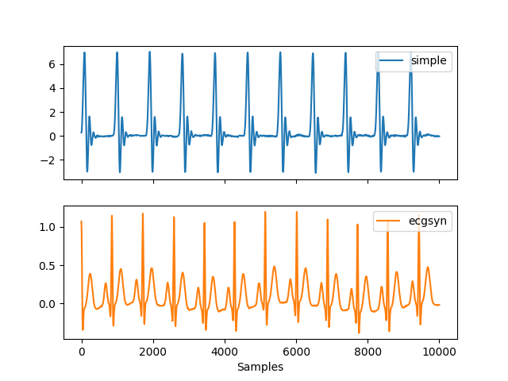
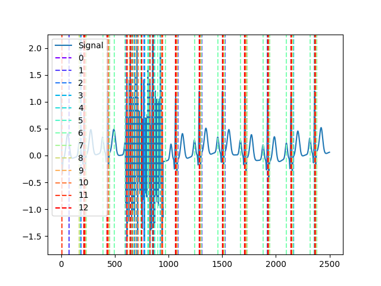
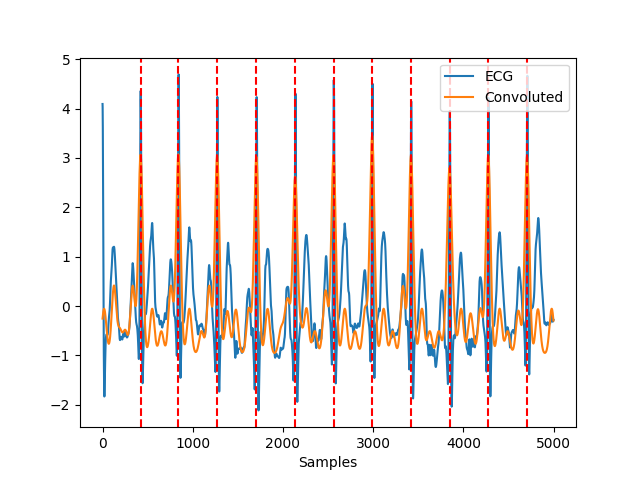

ECG
Contents
ECG#
Main#
ecg_process()#
- ecg_process(ecg_signal, sampling_rate=1000, method='neurokit')[source]#
Automated pipeline for preprocessing an ECG signal
This function runs different preprocessing steps. Help us improve the documentation of this function by making it more tidy and useful!
- Parameters
ecg_signal (Union[list, np.array, pd.Series]) – The raw ECG channel.
sampling_rate (int) – The sampling frequency of
ecg_signal(in Hz, i.e., samples/second). Defaults to 1000.method (str) – The processing pipeline to apply. Defaults to
"neurokit".
- Returns
signals (DataFrame) – A DataFrame of the same length as the
ecg_signalcontaining the following columns:"ECG_Raw": the raw signal."ECG_Clean": the cleaned signal."ECG_R_Peaks": the R-peaks marked as “1” in a list of zeros."ECG_Rate": heart rate interpolated between R-peaks."ECG_P_Peaks": the P-peaks marked as “1” in a list of zeros"ECG_Q_Peaks": the Q-peaks marked as “1” in a list of zeros ."ECG_S_Peaks": the S-peaks marked as “1” in a list of zeros."ECG_T_Peaks": the T-peaks marked as “1” in a list of zeros."ECG_P_Onsets": the P-onsets marked as “1” in a list of zeros."ECG_P_Offsets": the P-offsets marked as “1” in a list of zeros (only when method inecg_delineate()is wavelet)."ECG_T_Onsets": the T-onsets marked as “1” in a list of zeros (only when method inecg_delineate()is wavelet)."ECG_T_Offsets": the T-offsets marked as “1” in a list of zeros."ECG_R_Onsets": the R-onsets marked as “1” in a list of zeros (only when method inecg_delineate()is wavelet)."ECG_R_Offsets": the R-offsets marked as “1” in a list of zeros (only when method inecg_delineate()is wavelet)."ECG_Phase_Atrial": cardiac phase, marked by “1” for systole and “0” for diastole."ECG_Phase_Ventricular": cardiac phase, marked by “1” for systole and “0” for diastole."ECG_Atrial_PhaseCompletion": cardiac phase (atrial) completion, expressed in percentage (from 0 to 1), representing the stage of the current cardiac phase."ECG_Ventricular_PhaseCompletion": cardiac phase (ventricular) completion, expressed in percentage (from 0 to 1), representing the stage of the current cardiac phase.This list is not up-to-date. Help us improve the documentation!
info (dict) – A dictionary containing the samples at which the R-peaks occur, accessible with the key
"ECG_Peaks", as well as the signals’ sampling rate.
See also
ecg_clean,ecg_peaks,ecg_delineate,ecg_phase,ecg_plot,signal_rateExamples
In [1]: import neurokit2 as nk # Simulate ECG signal In [2]: ecg = nk.ecg_simulate(duration=15, sampling_rate=1000, heart_rate=80) # Preprocess ECG signal In [3]: signals, info = nk.ecg_process(ecg, sampling_rate=1000) # Visualize In [4]: nk.ecg_plot(signals)

ecg_analyze()#
- ecg_analyze(data, sampling_rate=1000, method='auto')[source]#
Automated Analysis ECG
Performs ECG analysis by computing relevant features and indices on either epochs (event-related analysis) or on longer periods of data (interval-related analysis), such as resting-state data.
- Parameters
data (Union[dict, pd.DataFrame]) – A dictionary of epochs, containing one DataFrame per epoch, usually obtained via
epochs_create(), or a DataFrame containing all epochs, usually obtained viaepochs_to_df(). Can also take a DataFrame of processed signals from a longer period of data, typically generated byecg_process()orbio_process(). Can also take a dict containing sets of separate periods of data.sampling_rate (int) – The sampling frequency of the signal (in Hz, i.e., samples/second). Defaults to 1000Hz.
method (str) – Can be one of
"event-related"for event-related analysis on epochs, or"interval-related"for analysis on longer periods of data. Defaults toauto, where the method will be chosen based on the mean duration of the data ("event-related"for duration under 10s).
- Returns
DataFrame – A dataframe containing the analyzed ECG features. If event-related analysis is conducted, each epoch is indicated by the
Labelcolumn. Seeecg_eventrelated()andecg_intervalrelated()docstrings for details.
Examples
Example 1: Event-related analysis
In [1]: import neurokit2 as nk # Download the data In [2]: data = nk.data("bio_eventrelated_100hz") # Process the data for event-related analysis In [3]: df, info = nk.bio_process(ecg=data["ECG"], sampling_rate=100) In [4]: events = nk.events_find(data["Photosensor"], threshold_keep='below', ...: event_conditions=["Negative", "Neutral", "Neutral", "Negative"]) ...: In [5]: epochs = nk.epochs_create(df, events, sampling_rate=100, epochs_start=-0.1, epochs_end=1.9) # Analyze In [6]: analyze_epochs = nk.ecg_analyze(epochs, sampling_rate=100) # Get a dataframe with all the results In [7]: analyze_epochs Out[7]: Label Condition ... ECG_Phase_Completion_Ventricular ECG_Quality_Mean 1 1 Negative ... 0.400000 0.821619 2 2 Neutral ... 0.553846 0.907924 3 3 Neutral ... 0.133333 0.825420 4 4 Negative ... 0.575342 0.802749 [4 rows x 18 columns]
Example 2: Interval-related analysis
In [8]: import neurokit2 as nk # Download the resting-state data In [9]: data = nk.data("bio_resting_5min_100hz") # Process the data In [10]: df, info = nk.ecg_process(data["ECG"], sampling_rate=100) # Analyze In [11]: analyze_df = nk.ecg_analyze(df, sampling_rate=100) # Get results In [12]: analyze_df Out[12]: ECG_Rate_Mean HRV_MeanNN HRV_SDNN ... HRV_HFD HRV_KFD HRV_LZC 0 86.392105 694.756381 49.036043 ... 1.846507 2.722348 0.873124 [1 rows x 90 columns]
ecg_simulate()#
- ecg_simulate(duration=10, length=None, sampling_rate=1000, noise=0.01, heart_rate=70, heart_rate_std=1, method='ecgsyn', random_state=None, **kwargs)[source]#
Simulate an ECG/EKG signal
Generate an artificial (synthetic) ECG signal of a given duration and sampling rate using either the ECGSYN dynamical model (McSharry et al., 2003) or a simpler model based on Daubechies wavelets to roughly approximate cardiac cycles.
- Parameters
duration (int) – Desired recording length in seconds.
sampling_rate (int) – The desired sampling rate (in Hz, i.e., samples/second).
length (int) – The desired length of the signal (in samples).
noise (float) – Noise level (amplitude of the laplace noise).
heart_rate (int) – Desired simulated heart rate (in beats per minute). The default is 70. Note that for the
"ECGSYN"method, random fluctuations are to be expected to mimick a real heart rate. These fluctuations can cause some slight discrepancies between the requested heart rate and the empirical heart rate, especially for shorter signals.heart_rate_std (int) – Desired heart rate standard deviation (beats per minute).
method (str) – The model used to generate the signal. Can be
"simple"for a simulation based on Daubechies wavelets that roughly approximates a single cardiac cycle. If"ecgsyn"(default), will use the model desbribed McSharry et al. (2003). If"multileads", will return a DataFrame containing 12-leads (see 12-leads ECG simulation).random_state (int) – Seed for the random number generator.
**kwargs – Other keywords parameters for ECGSYN algorithm, such as
"lfhfratio","ti","ai","bi".
- Returns
array – Vector containing the ECG signal.
Examples
Example 1: Simulate single lead ECG
In [1]: import neurokit2 as nk In [2]: ecg1 = nk.ecg_simulate(duration=10, method="simple") In [3]: ecg2 = nk.ecg_simulate(duration=10, method="ecgsyn") # Visualize result In [4]: nk.signal_plot([ecg1, ecg2], labels=["simple", "ecgsyn"], subplots=True)
Example 2: Simulate 12-leads ECG
In [5]: ecg12 = nk.ecg_simulate(duration=10, method="multileads") # Visualize result In [6]: nk.signal_plot(ecg12, subplots=True)

See also
References
McSharry, P. E., Clifford, G. D., Tarassenko, L., & Smith, L. A. (2003). A dynamical model for generating synthetic electrocardiogram signals. IEEE transactions on biomedical engineering, 50 (3), 289-294.
{kind=link}
ecg_plot()#
- ecg_plot(ecg_signals, rpeaks=None, sampling_rate=None, show_type='default')[source]#
Visualize ECG data
Plot ECG signals and R-peaks.
- Parameters
ecg_signals (DataFrame) – DataFrame obtained from
ecg_process().rpeaks (dict) – The samples at which the R-peak occur. Dict returned by
ecg_process(). Defaults toNone.sampling_rate (int) – The sampling frequency of the ECG (in Hz, i.e., samples/second). Needs to be supplied if the data should be plotted over time in seconds. Otherwise the data is plotted over samples. Defaults to
None. Must be specified to plot artifacts.show_type (str) – Visualize the ECG data with
"default"or visualize artifacts thresholds with"artifacts"produced byecg_fixpeaks(), or"full"to visualize both.
- Returns
fig – Figure representing a plot of the processed ecg signals (and peak artifacts).
Examples
In [1]: import neurokit2 as nk In [2]: ecg = nk.ecg_simulate(duration=15, sampling_rate=1000, heart_rate=80) In [3]: signals, info = nk.ecg_process(ecg, sampling_rate=1000) In [4]: nk.ecg_plot(signals, sampling_rate=1000, show_type='default')

See also
Preprocessing#
ecg_clean()#
- ecg_clean(ecg_signal, sampling_rate=1000, method='neurokit', **kwargs)[source]#
ECG Signal Cleaning
Clean an ECG signal to remove noise and improve peak-detection accuracy. Different cleaning method are implemented.
'neurokit'(default): 0.5 Hz high-pass butterworth filter (order = 5), followed by powerline filtering (seesignal_filter()). By default,powerline = 50.'biosppy': Same as in the biosppy package. Please help providing a better description!'pantompkins1985': Method used in Pan & Tompkins (1985). Please help providing a better description!'hamilton2002': Method used in Hamilton (2002). Please help providing a better description!'elgendi2010': Method used in Elgendi et al. (2010). Please help providing a better description!'engzeemod2012': Method used in Engelse & Zeelenberg (1979). Please help providing a better description!
- Parameters
ecg_signal (Union[list, np.array, pd.Series]) – The raw ECG channel.
sampling_rate (int) – The sampling frequency of
ecg_signal(in Hz, i.e., samples/second). Defaults to 1000.method (str) – The processing pipeline to apply. Can be one of
"neurokit"(default),"biosppy","pantompkins1985","hamilton2002","elgendi2010","engzeemod2012".**kwargs – Other arguments to be passed to specific methods.
- Returns
array – Vector containing the cleaned ECG signal.
See also
ecg_peaks,ecg_process,ecg_plot,signal_rate,signal_filterExamples
In [1]: import pandas as pd In [2]: import neurokit2 as nk In [3]: import matplotlib.pyplot as plt In [4]: ecg = nk.ecg_simulate(duration=10, sampling_rate=1000) In [5]: signals = pd.DataFrame({"ECG_Raw" : ecg, ...: "ECG_NeuroKit" : nk.ecg_clean(ecg, sampling_rate=1000, method="neurokit"), ...: "ECG_BioSPPy" : nk.ecg_clean(ecg, sampling_rate=1000, method="biosppy"), ...: "ECG_PanTompkins" : nk.ecg_clean(ecg, sampling_rate=1000, method="pantompkins1985"), ...: "ECG_Hamilton" : nk.ecg_clean(ecg, sampling_rate=1000, method="hamilton2002"), ...: "ECG_Elgendi" : nk.ecg_clean(ecg, sampling_rate=1000, method="elgendi2010"), ...: "ECG_EngZeeMod" : nk.ecg_clean(ecg, sampling_rate=1000, method="engzeemod2012")}) ...: In [6]: signals.plot() Out[6]: <AxesSubplot:>

References
Engelse, W. A., & Zeelenberg, C. (1979). A single scan algorithm for QRS-detection and feature extraction. Computers in cardiology, 6(1979), 37-42.
Pan, J., & Tompkins, W. J. (1985). A real-time QRS detection algorithm. IEEE transactions on biomedical engineering, (3), 230-236.
Hamilton, P. (2002). Open source ECG analysis. In Computers in cardiology (pp. 101-104). IEEE.
Elgendi, M., Jonkman, M., & De Boer, F. (2010). Frequency Bands Effects on QRS Detection. Biosignals, Proceedings of the Third International Conference on Bio-inspired Systems and Signal Processing, 428-431.
ecg_quality()#
- ecg_quality(ecg_cleaned, rpeaks=None, sampling_rate=1000, method='averageQRS', approach=None)[source]#
ECG Signal Quality Assessment
Assess the quality of the ECG Signal using various methods:
The
"averageQRS"method computes a continuous index of quality of the ECG signal, by interpolating the distance of each QRS segment from the average QRS segment present in the * data. This index is therefore relative: 1 corresponds to heartbeats that are the closest to the average sample and 0 corresponds to the most distant heartbeat from that average sample. Note that 1 does not necessarily means “good”: if the majority of samples are bad, than being close to the average will likely mean bad as well. Use this index with care and plot it alongside your ECG signal to see if it makes sense.The
"zhao2018"method (Zhao et al., 2018) extracts several signal quality indexes (SQIs): QRS wave power spectrum distribution pSQI, kurtosis kSQI, and baseline relative power basSQI. An additional R peak detection match qSQI was originally computed in the paper but left out in this algorithm. The indices were originally weighted with a ratio of [0.4, 0.4, 0.1, 0.1] to generate the final classification outcome, but because qSQI was dropped, the weights have been rearranged to [0.6, 0.2, 0.2] for pSQI, kSQI and basSQI respectively.
- Parameters
ecg_cleaned (Union[list, np.array, pd.Series]) – The cleaned ECG signal in the form of a vector of values.
rpeaks (tuple or list) – The list of R-peak samples returned by
ecg_peaks(). If None, peaks is computed from the signal input.sampling_rate (int) – The sampling frequency of the signal (in Hz, i.e., samples/second).
method (str) – The method for computing ECG signal quality, can be
"averageQRS"(default) or"zhao2018".approach (str) – The data fusion approach as documented in Zhao et al. (2018). Can be
"simple"or"fuzzy". The former performs simple heuristic fusion of SQIs and the latter performs fuzzy comprehensive evaluation. IfNone(default), simple heuristic fusion is used.**kwargs – Keyword arguments to be passed to
signal_power()in the computation of basSQI and pSQI.
- Returns
array or str – Vector containing the quality index ranging from 0 to 1 for
"averageQRS"method, returns string classification (Unacceptable,Barely AcceptableorExcellent) of the signal for"zhao2018 method".
See also
References
Zhao, Z., & Zhang, Y. (2018). “SQI quality evaluation mechanism of single-lead ECG signal based on simple heuristic fusion and fuzzy comprehensive evaluation”. Frontiers in Physiology, 9, 727.
Examples
Example 1: ‘averageQRS’ method
In [1]: import neurokit2 as nk In [2]: ecg = nk.ecg_simulate(duration=30, sampling_rate=300, noise=0.2) In [3]: ecg_cleaned = nk.ecg_clean(ecg, sampling_rate=300) In [4]: quality = nk.ecg_quality(ecg_cleaned, sampling_rate=300) In [5]: nk.signal_plot([ecg_cleaned, quality], standardize=True)

Example 2: Zhao et al. (2018) method
In [6]: nk.ecg_quality(ecg_cleaned, ...: sampling_rate=300, ...: method="zhao2018", ...: approach="fuzzy") ...: Out[6]: 'Barely acceptable'
ecg_rsp()#
- ecg_rsp(ecg_rate, sampling_rate=1000, method='vangent2019')[source]#
ECG-Derived Respiration (EDR)
Extract ECG-Derived Respiration (EDR), a proxy of a respiratory signal based on heart rate. * Note that this implementation is far from being complete, as the information in the related papers prevents me from getting a full understanding of the procedure. Help is required to document, test and validate the function!
- Parameters
ecg_rate (array) – The heart rate signal as obtained via
ecg_rate().sampling_rate (int) – The sampling frequency of the signal that contains the R-peaks (in Hz, i.e., samples/second). Defaults to 1000Hz.
method (str) – Can be one of
"vangent2019"(default),"soni2019","charlton2016"or"sarkar2015".
- Returns
array – A Numpy array containing the derived respiratory rate.
Examples
Example 1: Compare to real RSP signal
In [1]: import neurokit2 as nk # Get heart rate In [2]: data = nk.data("bio_eventrelated_100hz") In [3]: rpeaks, info = nk.ecg_peaks(data["ECG"], sampling_rate=100) In [4]: ecg_rate = nk.signal_rate(rpeaks, sampling_rate=100, desired_length=len(rpeaks)) # Get ECG Derived Respiration (EDR) and add to the data In [5]: data["EDR"] = nk.ecg_rsp(ecg_rate, sampling_rate=100) # Visualize result In [6]: nk.signal_plot([data["RSP"], data["EDR"]], standardize = True)

Example 2: Methods comparison
In [7]: data["vangent2019"] = nk.ecg_rsp(ecg_rate, sampling_rate=100, method="vangent2019") In [8]: data["sarkar2015"] = nk.ecg_rsp(ecg_rate, sampling_rate=100, method="sarkar2015") In [9]: data["charlton2016"] = nk.ecg_rsp(ecg_rate, sampling_rate=100, method="charlton2016") In [10]: data["soni2019"] = nk.ecg_rsp(ecg_rate, sampling_rate=100, method="soni2019") # Visualize results In [11]: nk.signal_plot([data["RSP"], data["vangent2019"], data["sarkar2015"], ....: data["charlton2016"], data["soni2019"]], standardize = True) ....:

References
van Gent, P., Farah, H., van Nes, N., & van Arem, B. (2019). HeartPy: A novel heart rate algorithm for the analysis of noisy signals. Transportation research part F: traffic psychology and behaviour, 66, 368-378.
Sarkar, S., Bhattacherjee, S., & Pal, S. (2015). Extraction of respiration signal from ECG for respiratory rate estimation.
Charlton, P. H., Bonnici, T., Tarassenko, L., Clifton, D. A., Beale, R., & Watkinson, P. J. (2016). An assessment of algorithms to estimate respiratory rate from the electrocardiogram and photoplethysmogram. Physiological measurement, 37(4), 610.
Soni, R., & Muniyandi, M. (2019). Breath rate variability: a novel measure to study the meditation effects. International Journal of Yoga, 12(1), 45.
ecg_peaks()#
- ecg_peaks(ecg_cleaned, sampling_rate=1000, method='neurokit', correct_artifacts=False, **kwargs)[source]#
Find R-peaks in an ECG signal
Find R-peaks in an ECG signal using the specified method. The method accepts unfiltered ECG signals as input, although it is expected that a filtered (cleaned) ECG will result in better results.
- Parameters
ecg_cleaned (Union[list, np.array, pd.Series]) – The cleaned ECG channel as returned by
ecg_clean().sampling_rate (int) – The sampling frequency of
ecg_signal(in Hz, i.e., samples/second). Defaults to 1000.method (string) – The algorithm to be used for R-peak detection. Can be one of
"neurokit"(default),"pantompkins1985","nabian2018","gamboa2008","zong2003","hamilton2002","christov2004","engzeemod2012","elgendi2010","kalidas2017","martinez2003","rodrigues2021"or"promac".correct_artifacts (bool) – Whether or not to first identify and fix artifacts as defined by Lipponen & Tarvainen (2019).
**kwargs – Additional keyword arguments, usually specific for each method.
- Returns
signals (DataFrame) – A DataFrame of same length as the input signal in which occurrences of R-peaks marked as
1in a list of zeros with the same length asecg_cleaned. Accessible with the keys"ECG_R_Peaks".info (dict) – A dictionary containing additional information, in this case the samples at which R-peaks occur, accessible with the key
"ECG_R_Peaks", as well as the signals’ sampling rate, accessible with the key"sampling_rate".
See also
Examples
Example 1: Find R-peaks using the default method (
"neurokit").
In [1]: import neurokit2 as nk In [2]: ecg = nk.ecg_simulate(duration=10, sampling_rate=1000) In [3]: signals, info = nk.ecg_peaks(ecg, correct_artifacts=True) In [4]: nk.events_plot(info["ECG_R_Peaks"], ecg)

Example 2: Compare different methods
# neurokit (default) In [5]: cleaned = nk.ecg_clean(ecg, method="neurokit") In [6]: _, neurokit = nk.ecg_peaks(cleaned, method="neurokit") # pantompkins1985 In [7]: cleaned = nk.ecg_clean(ecg, method="pantompkins1985") In [8]: _, pantompkins1985 = nk.ecg_peaks(cleaned, method="pantompkins1985") # nabian2018 In [9]: _, nabian2018 = nk.ecg_peaks(ecg, method="nabian2018") # hamilton2002 In [10]: cleaned = nk.ecg_clean(ecg, method="hamilton2002") In [11]: _, hamilton2002 = nk.ecg_peaks(cleaned, method="hamilton2002") # martinez2003 In [12]: _, martinez2003 = nk.ecg_peaks(ecg, method="martinez2003") # christov2004 In [13]: _, christov2004 = nk.ecg_peaks(cleaned, method="christov2004") # gamboa2008 In [14]: cleaned = nk.ecg_clean(ecg, method="gamboa2008") In [15]: _, gamboa2008 = nk.ecg_peaks(cleaned, method="gamboa2008") # elgendi2010 In [16]: cleaned = nk.ecg_clean(ecg, method="elgendi2010") In [17]: _, elgendi2010 = nk.ecg_peaks(cleaned, method="elgendi2010") # engzeemod2012 In [18]: cleaned = nk.ecg_clean(ecg, method="engzeemod2012") In [19]: _, engzeemod2012 = nk.ecg_peaks(cleaned, method="engzeemod2012") # kalidas2017 In [20]: cleaned = nk.ecg_clean(ecg, method="kalidas2017") In [21]: _, kalidas2017 = nk.ecg_peaks(cleaned, method="kalidas2017") # rodrigues2021 In [22]: _, rodrigues2021 = nk.ecg_peaks(ecg, method="rodrigues2021") # Collect all R-peak lists by iterating through the result dicts In [23]: rpeaks = [ ....: i["ECG_R_Peaks"] ....: for i in [ ....: neurokit, ....: pantompkins1985, ....: nabian2018, ....: hamilton2002, ....: martinez2003, ....: christov2004, ....: gamboa2008, ....: elgendi2010, ....: engzeemod2012, ....: kalidas2017, ....: rodrigues2021, ....: ] ....: ] ....: # Visualize results In [24]: nk.events_plot(rpeaks, ecg)
Example 3: Method-agreement procedure (‘promac’)
In [25]: ecg = nk.ecg_simulate(duration=10, sampling_rate=500) In [26]: ecg = nk.signal_distort(ecg, ....: sampling_rate=500, ....: noise_amplitude=0.05, noise_frequency=[25, 50], ....: artifacts_amplitude=0.05, artifacts_frequency=50) ....: In [27]: info = nk.ecg_findpeaks(ecg, sampling_rate=1000, method="promac", show=True)
References
neurokitUnpublished. See this discussion for more information on the method: https://github.com/neuropsychology/NeuroKit/issues/476
pantompkins1985Pan, J., & Tompkins, W. J. (1985). A real-time QRS detection algorithm. IEEE transactions on biomedical engineering, (3), 230-236.
nabian2018Nabian, M., Yin, Y., Wormwood, J., Quigley, K. S., Barrett, L. F., Ostadabbas, S. (2018). An Open-Source Feature Extraction Tool for the Analysis of Peripheral Physiological Data. IEEE Journal of Translational Engineering in Health and Medicine, 6, 1-11. doi:10.1109/jtehm.2018.2878000
gamboa2008Gamboa, H. (2008). Multi-modal behavioral biometrics based on hci and electrophysiology. PhD ThesisUniversidade.
zong2003Zong, W., Heldt, T., Moody, G. B., & Mark, R. G. (2003). An open-source algorithm to detect onset of arterial blood pressure pulses. In Computers in Cardiology, 2003 (pp. 259-262). IEEE.
hamilton2002Hamilton, P. (2002). Open source ECG analysis. In Computers in cardiology (pp. 101-104). IEEE.
christov2004Ivaylo I. Christov, Real time electrocardiogram QRS detection using combined adaptive threshold, BioMedical Engineering OnLine 2004, vol. 3:28, 2004.
engzeemod2012Engelse, W. A., & Zeelenberg, C. (1979). A single scan algorithm for QRS-detection and feature extraction. Computers in cardiology, 6(1979), 37-42.
Lourenço, A., Silva, H., Leite, P., Lourenço, R., & Fred, A. L. (2012, February). Real Time Electrocardiogram Segmentation for Finger based ECG Biometrics. In Biosignals (pp. 49-54).
elgendi2010Elgendi, M., Jonkman, M., & De Boer, F. (2010). Frequency Bands Effects on QRS Detection. Biosignals, Proceedings of the Third International Conference on Bio-inspired Systems and Signal Processing, 428-431.
kalidas2017Kalidas, V., & Tamil, L. (2017, October). Real-time QRS detector using stationary wavelet transform for automated ECG analysis. In 2017 IEEE 17th International Conference on Bioinformatics and Bioengineering (BIBE) (pp. 457-461). IEEE.
martinez2003Unknown. Please help us retrieve the correct source!
rodrigues2021Gutiérrez-Rivas, R., García, J. J., Marnane, W. P., & Hernández, A. (2015). Novel real-time low-complexity QRS complex detector based on adaptive thresholding. IEEE Sensors Journal, 15(10), 6036-6043.
Sadhukhan, D., & Mitra, M. (2012). R-peak detection algorithm for ECG using double difference and RR interval processing. Procedia Technology, 4, 873-877.
Rodrigues, Tiago & Samoutphonh, Sirisack & Plácido da Silva, Hugo & Fred, Ana. (2021). A Low-Complexity R-peak Detection Algorithm with Adaptive Thresholding for Wearable Devices.
promacUnpublished. It runs different methods and derives a probability index using convolution. See this discussion for more information on the method: https://github.com/neuropsychology/NeuroKit/issues/222
Lipponen, J. A., & Tarvainen, M. P. (2019). A robust algorithm for heart rate variability time series artefact correction using novel beat classification. Journal of medical engineering & technology, 43(3), 173-181.
{kind=link}
{kind=link}
ecg_delineate()#
- ecg_delineate(ecg_cleaned, rpeaks=None, sampling_rate=1000, method='dwt', show=False, show_type='peaks', check=False, **kwargs)[source]#
Delineate QRS complex
Function to delineate the QRS complex, i.e., the different waves of the cardiac cycles. A typical ECG heartbeat consists of a P wave, a QRS complex and a T wave. The P wave represents the wave of depolarization that spreads from the SA-node throughout the atria. The QRS complex reflects the rapid depolarization of the right and left ventricles. Since the ventricles are the largest part of the heart, in terms of mass, the QRS complex usually has a much larger amplitude than the P-wave. The T wave represents the ventricular repolarization of the ventricles.On rare occasions, a U wave can be seen following the T wave. The U wave is believed to be related to the last remnants of ventricular repolarization.
- Parameters
ecg_cleaned (Union[list, np.array, pd.Series]) – The cleaned ECG channel as returned by
ecg_clean().rpeaks (Union[list, np.array, pd.Series]) – The samples at which R-peaks occur. Accessible with the key “ECG_R_Peaks” in the info dictionary returned by
ecg_findpeaks().sampling_rate (int) – The sampling frequency of
ecg_signal(in Hz, i.e., samples/second). Defaults to 1000.method (str) – Can be one of
"peak"for a peak-based method,"cwt"for continuous wavelet transform or"dwt"(default) for discrete wavelet transform.show (bool) – If
True, will return a plot to visualizing the delineated waves information.show_type (str) – The type of delineated waves information showed in the plot. Can be
"peaks","bounds_R","bounds_T","bounds_P"or"all".check (bool) – Defaults to
False. IfTrue, replaces the delineated features withnp.nanif its standardized distance from R-peaks is more than 3.**kwargs – Other optional arguments.
- Returns
waves (dict) – A dictionary containing additional information. For derivative method, the dictionary contains the samples at which P-peaks, Q-peaks, S-peaks, T-peaks, P-onsets and T-offsets occur, accessible with the keys
"ECG_P_Peaks","ECG_Q_Peaks","ECG_S_Peaks","ECG_T_Peaks","ECG_P_Onsets","ECG_T_Offsets", respectively.For wavelet methods, in addition to the above information, the dictionary contains the samples at which QRS-onsets and QRS-offsets occur, accessible with the key
"ECG_P_Peaks","ECG_T_Peaks","ECG_P_Onsets","ECG_P_Offsets","ECG_Q_Peaks","ECG_S_Peaks","ECG_T_Onsets","ECG_T_Offsets","ECG_R_Onsets","ECG_R_Offsets", respectively.signals (DataFrame) – A DataFrame of same length as the input signal in which occurrences of peaks, onsets and offsets marked as “1” in a list of zeros.
See also
ecg_clean,signal_fixpeaks,ecg_peaks,signal_rate,ecg_process,ecg_plotExamples
Step 1. Delineate
In [1]: import neurokit2 as nk # Simulate ECG signal In [2]: ecg = nk.ecg_simulate(duration=10, sampling_rate=1000) # Get R-peaks location In [3]: _, rpeaks = nk.ecg_peaks(ecg, sampling_rate=1000) # Delineate cardiac cycle In [4]: signals, waves = nk.ecg_delineate(ecg, rpeaks, sampling_rate=1000)
Step 2. Plot P-Peaks and T-Peaks
In [5]: nk.events_plot([waves["ECG_P_Peaks"], waves["ECG_T_Peaks"]], ecg)

References
Martínez, J. P., Almeida, R., Olmos, S., Rocha, A. P., & Laguna, P. (2004). A wavelet-based ECG delineator: evaluation on standard databases. IEEE Transactions on biomedical engineering, 51(4), 570-581.
ecg_phase()#
- ecg_phase(ecg_cleaned, rpeaks=None, delineate_info=None, sampling_rate=None)[source]#
Find the Cardiac Phase
Compute cardiac phase (for both atrial and ventricular), labelled as 1 for systole and 0 for diastole.
- Parameters
ecg_cleaned (Union[list, np.array, pd.Series]) – The cleaned ECG channel as returned by
ecg_clean().rpeaks (list or array or DataFrame or Series or dict) – The samples at which the different ECG peaks occur. If a dict or a DataFrame is passed, it is assumed that these containers were obtained with
ecg_findpeaks()orecg_peaks().delineate_info (dict) – A dictionary containing additional information of ecg delineation and can be obtained with
ecg_delineate().sampling_rate (int) – The sampling frequency of
ecg_signal(in Hz, i.e., samples/second). Defaults toNone.
- Returns
signals (DataFrame) – A DataFrame of same length as
ecg_signalcontaining the following columns:"ECG_Phase_Atrial": cardiac phase, marked by “1” for systole and “0” for diastole."ECG_Phase_Completion_Atrial": cardiac phase (atrial) completion, expressed in percentage (from 0 to 1), representing the stage of the current cardiac phase."ECG_Phase_Ventricular": cardiac phase, marked by “1” for systole and “0” for diastole."ECG_Phase_Completion_Ventricular": cardiac phase (ventricular) completion, expressed in percentage (from 0 to 1), representing the stage of the current cardiac phase.
See also
Examples
In [1]: import neurokit2 as nk In [2]: ecg = nk.ecg_simulate(duration=6, sampling_rate=1000) In [3]: _, rpeaks = nk.ecg_peaks(ecg) In [4]: signals, waves = nk.ecg_delineate(ecg, rpeaks, sampling_rate=1000) In [5]: cardiac_phase = nk.ecg_phase(ecg_cleaned=ecg, rpeaks=rpeaks, ...: delineate_info=waves, sampling_rate=1000) ...: In [6]: nk.signal_plot([ecg, cardiac_phase], standardize=True)

ecg_rate()#
- ecg_rate(peaks, sampling_rate=1000, desired_length=None, interpolation_method='monotone_cubic')#
Compute Signal Rate
Calculate signal rate (per minute) from a series of peaks. It is a general function that works for any series of peaks (i.e., not specific to a particular type of signal). It is computed as
60 / period, where the period is the time between the peaks (see func:.signal_period).Note
This function is implemented under
signal_rate(), but it also re-exported under different names, such asecg_rate(),ppg_rate(), orrsp_rate(). The aliases provided for consistency.- Parameters
peaks (Union[list, np.array, pd.DataFrame, pd.Series, dict]) – The samples at which the peaks occur. If an array is passed in, it is assumed that it was obtained with
signal_findpeaks(). If a DataFrame is passed in, it is assumed it is of the same length as the input signal in which occurrences of R-peaks are marked as “1”, with such containers obtained with e.g., :func:.`ecg_findpeaks` orrsp_findpeaks().sampling_rate (int) – The sampling frequency of the signal that contains peaks (in Hz, i.e., samples/second). Defaults to 1000.
desired_length (int) – If left at the default None, the returned rated will have the same number of elements as
peaks. If set to a value larger than the sample at which the last peak occurs in the signal (i.e.,peaks[-1]), the returned rate will be interpolated between peaks overdesired_lengthsamples. To interpolate the rate over the entire duration of the signal, setdesired_lengthto the number of samples in the signal. Cannot be smaller than or equal to the sample at which the last peak occurs in the signal. Defaults toNone.interpolation_method (str) – Method used to interpolate the rate between peaks. See
signal_interpolate()."monotone_cubic"is chosen as the default interpolation method since it ensures monotone interpolation between data points (i.e., it prevents physiologically implausible “overshoots” or “undershoots” in the y-direction). In contrast, the widely used cubic spline interpolation does not ensure monotonicity.
- Returns
array – A vector containing the rate (peaks per minute).
See also
signal_period,signal_findpeaks,signal_fixpeaks,signal_plotExamples
In [1]: import neurokit2 as nk # Create signal of varying frequency In [2]: freq = nk.signal_simulate(2, frequency = 1) In [3]: signal = np.sin((freq).cumsum() * 0.5) # Find peaks In [4]: info = nk.signal_findpeaks(signal) # Compute rate using 2 methods In [5]: rate1 = nk.signal_rate(peaks=info["Peaks"], ...: desired_length=len(signal), ...: interpolation_method="nearest") ...: In [6]: rate2 = nk.signal_rate(peaks=info["Peaks"], ...: desired_length=len(signal), ...: interpolation_method="monotone_cubic") ...: # Visualize signal and rate on the same scale In [7]: nk.signal_plot([signal, rate1, rate2], ...: labels = ["Original signal", "Rate (nearest)", "Rate (monotone cubic)"], ...: standardize = True) ...:

ecg_segment()#
- ecg_segment(ecg_cleaned, rpeaks=None, sampling_rate=1000, show=False)[source]#
Segment an ECG signal into single heartbeats
Segment an ECG signal into single heartbeats. Convenient for visualizing all the heart beats.
- Parameters
ecg_cleaned (Union[list, np.array, pd.Series]) – The cleaned ECG channel as returned by
ecg_clean().rpeaks (dict) – The samples at which the R-peaks occur. Dict returned by
ecg_peaks(). Defaults toNone.sampling_rate (int) – The sampling frequency of
ecg_signal(in Hz, i.e., samples/second). Defaults to 1000.show (bool) – If
True, will return a plot of heartbeats. Defaults toFalse.
- Returns
dict – A dict containing DataFrames for all segmented heartbeats.
Examples
In [1]: import neurokit2 as nk In [2]: ecg = nk.ecg_simulate(duration=15, sampling_rate=1000, heart_rate=80, noise = 0.05) In [3]: qrs_epochs = nk.ecg_segment(ecg, rpeaks=None, sampling_rate=1000, show=True)

Analysis#
Miscellaneous#
ecg_findpeaks()#
- ecg_findpeaks(ecg_cleaned, sampling_rate=1000, method='neurokit', show=False, **kwargs)[source]#
Locate R-peaks
Low-level function used by
ecg_peaks()to identify R-peaks in an ECG signal using a different set of algorithms. Use the main function and see its documentation for details.- Parameters
ecg_cleaned (Union[list, np.array, pd.Series]) – See
ecg_peaks().sampling_rate (int) – See
ecg_peaks().method (string) – See
ecg_peaks().show (bool) – If
True, will return a plot to visualizing the thresholds used in the algorithm. Useful for debugging.**kwargs – Additional keyword arguments, usually specific for each
method.
- Returns
info (dict) – A dictionary containing additional information, in this case the samples at which R-peaks occur, accessible with the key
"ECG_R_Peaks".
See also
Any function appearing below this point is not explicitly part of the documentation and should be added. Please open an issue if there is one.
Submodule for NeuroKit.